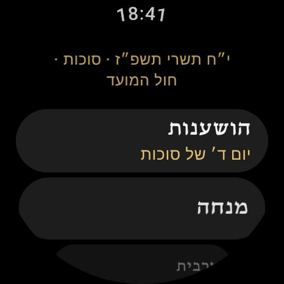
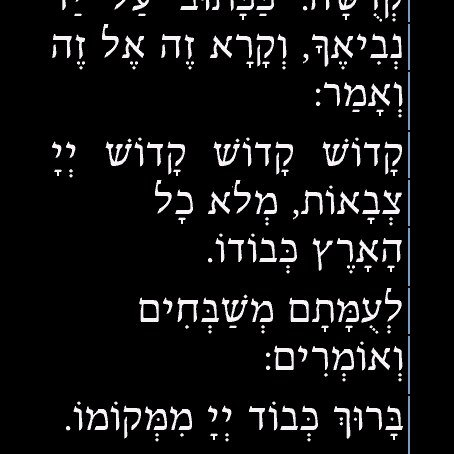
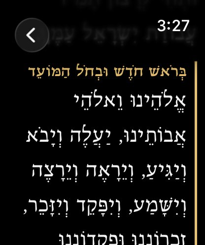
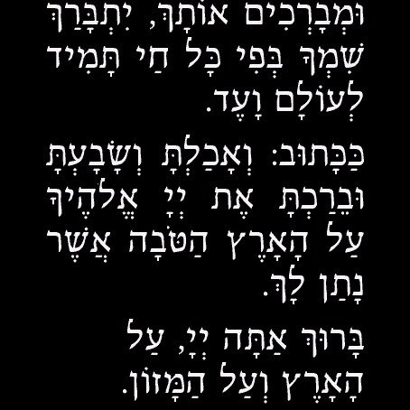
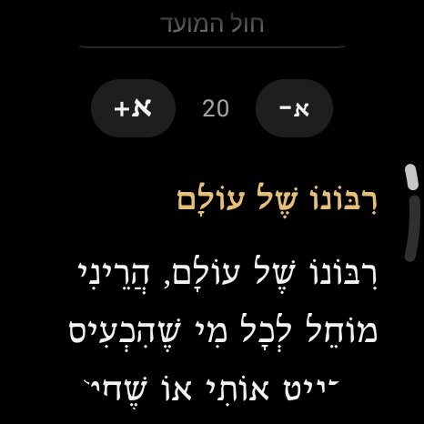
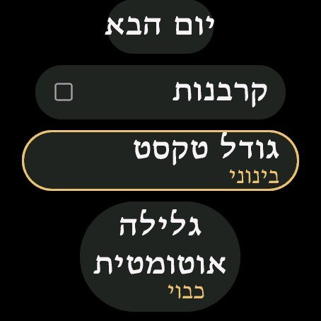

היום כולו
הכול ביד אחת
מנחה, ערבית, ברכת המזון, מעין שלוש, בורא נפשות, אשר יצר ותפילת הדרך. מוצאים הכול בשתי נגיעות.
מנחה
מנחה בעבודה
עם קרבנות ופטום הקטורת כאפשרות. החלקים שנאמרים רק בחזרת הש״ץ מסומנים, כך שברור איפה ממשיכים.
ערבית
ערבית בדרך הביתה
מנחה שמתפללים אחרי השקיעה נשארת של היום, וערבית כבר של הלילה. הברכון יודע לפי שעת השקיעה במיקום שלכם.
ברכת המזון
אחרי הארוחה
עם אפשרות זימון, ו״ברכה מעין שלוש״: בוחרים מה אכלתם, והנוסח מתאים את עצמו.
קריאת שמע
לפני השינה
קריאת שמע שעל המיטה, בניקוד מלא, בגופן הדסים הברור, על רקע שחור שלא מסנוור בחושך.
נוחות
גלילה שאתם קובעים
בכפתורים או במגע, שלושה גדלי טקסט, וגלילה אוטומטית במהירות מ־1 עד 10. לחיצה עוצרת אותה לרגע.





